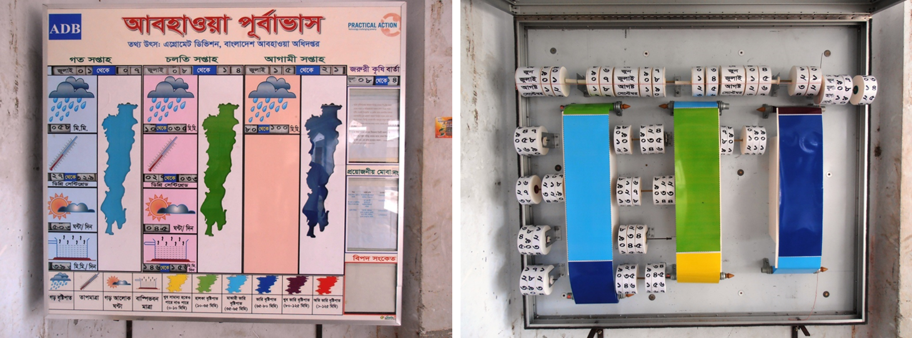

We are currently redesigning the Resilience Mapper to better show partner contributions toward reaching the 1 billion person goal.
We'll have this section of the site online again soon to provide the data you are looking for.

This weather display sign in Bangladesh demonstrates a great example of sharing relevant data with simple tools.
We hope to have this kind of simplicity and direct impact for the new Resilience Mapper.